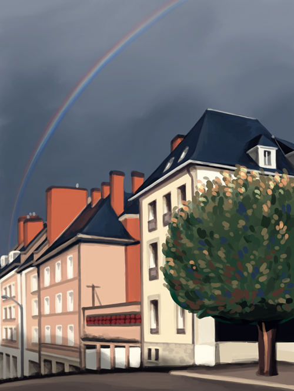
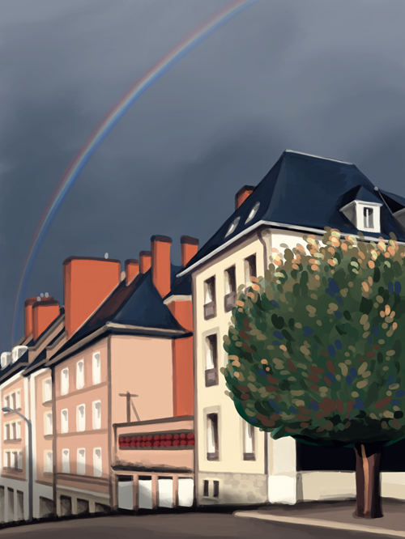

Blois France
I spent a big chunk of the pandemic in a French town called Blois, from October 2020 - May 2021. I was accepted into the TAPIF program. This program takes native English-speaking applicants to be teaching assistants in English classrooms in France, so that French students can get experience hearing real accents, and the assistants can learn about French culture.
I applied in 2019, but when the pandemic started I feared the whole thing would be cancelled. It was definitely on some kind of hold during the spring. But during the summer, well after I'd expected to hear one way or another whether I was accepted, I finally got a letter telling me I had been!
It was a strange time to be overseas. I couldn't do much of the tourist experience; everything shut down in France shortly after I arrived and stayed closed until after I left. Not only were all the museums closed, but you weren't allowed to travel more than 3 kilometeres from your place of residence unless you had a waiver for work. Every timei left my house, I had to fill out a form (there was a digital one available) saying where I lived, what time I'd left at, and why. Theoretically you could get stopped by some authprity and fined if you'd broken the rules, though I never heard of it happening to anyone.
So I went for a lot of walks. And my town (a city of about 50,000 named Blois which was about 2 hours south of Paris by train) was not only a very walkable city, but a beautiful place to walk. I was thoroughly spoiled by it, and moving back to the US when my term was over was a nasty sort of culture shock.
 
